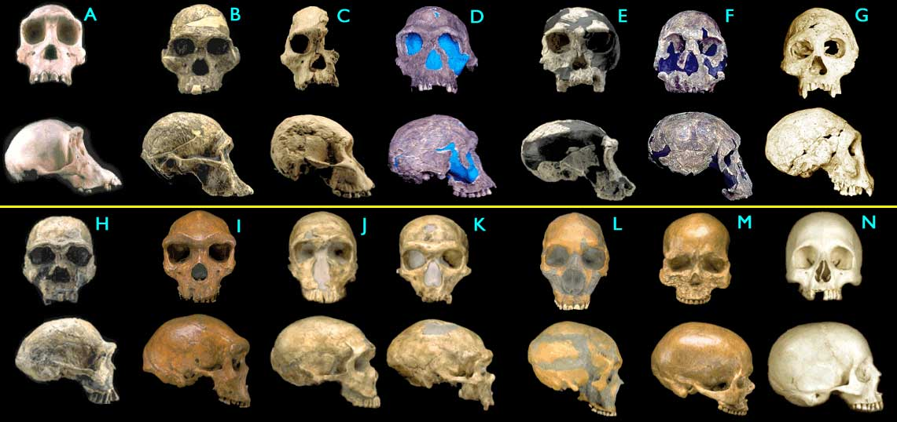

29 Beweise für Makroevolution
Teil 1:
Der einzigartige universelle Phylogenetische Baum
Copyright © 1999-2002 durch Douglas Theobald, Ph.D.

| Zurück |

Abbildung 1.4.4. Fossilien von Hominiden-Schädeln. Einige der Abbildungen wurden zur Vereinfachung des Vergleichs modifiziert (nur Spiegelung von links nach rechts oder Entfernung eines Kieferknochens). (Bilder © 2000 Smithsonian Institution.)
- (A) Pan troglodytes, Schimpanse, modern
- (B) Australopithecus africanus, STS 5, 2,6 My
- (C) Australopithecus africanus, STS 71, 2,5 My
- (D) Homo habilis, KNM-ER 1813, 1,9 My
- (E) Homo habilis, OH24, 1,8 My
- (F) Homo rudolfensis, KNM-ER 1470, 1,8 My
- (G) Homo erectus, Dmanisi-Kranium D2700, 1,75 My
- (H) Homo ergaster (frühes H. erectus), KNM-ER 3733, 1,75 My
- (I) Homo heidelbergensis, "Rhodesia man," 300.000 - 125.000 y
- (J) Homo sapiens neanderthalensis, La Ferrassie 1, 70.000 y
- (K) Homo sapiens neanderthalensis, La Chappelle-aux-Saints, 60.000 y
- (L) Homo sapiens neanderthalensis, Le Moustier, 45.000 y
- (M) Homo sapiens sapiens, Cro-Magnon I, 30.000 y
- (N) Homo sapiens sapiens, modern
| Zurück |